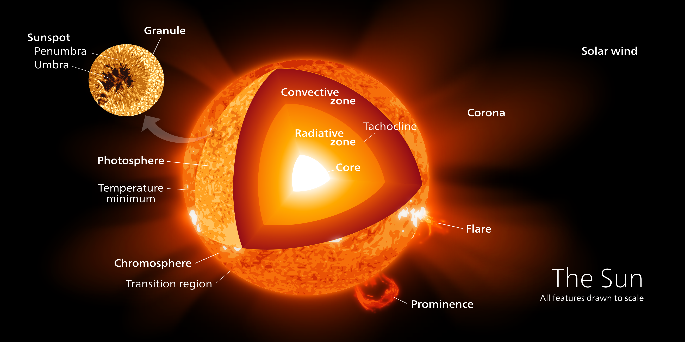
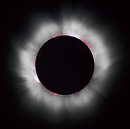

The Sun is the star at the center of the Solar System and is by far the most important source of energy for life on Earth. It is a nearly perfect sphere of hot plasma, with internal convective motion that generates a magnetic field via a dynamo process. Its diameter is about 109 times that of Earth, and its mass is about 330,000 times that of Earth, accounting for about 99.86% of the total mass of the Solar System. About three quarters of the Sun's mass consists of hydrogen; the rest is mostly helium, with much smaller quantities of heavier elements, including oxygen, carbon, neon, and iron.
Internal Structure

Core
The core of the Sun extends from the center to about 20-25% of the solar radius.It has a density of up to 150 g/cm3 (about 150 times the density of water) and a temperature of close to 15.7 million kelvins (K). By contrast, the Sun's surface temperature is approximately 5,800 K. Recent analysis of SOHO mission data favors a faster rotation rate in the core than in the radiative zone above.Through most of the Sun's life, energy is produced by nuclear fusion in the core region through a series of steps called the p-p (proton-proton) chain; this process converts hydrogen into helium. Only 0.8% of the energy generated in the Sun comes from the CNO cycle, though this proportion is expected to increase as the Sun becomes older.
The core is the only region in the Sun that produces an appreciable amount of thermal energy through fusion; 99% of the power is generated within 24% of the Sun's radius, and by 30% of the radius, fusion has stopped nearly entirely. The remainder of the Sun is heated by this energy as is transferred outwards through many successive layers, finally to the solar photosphere where it escapes into space as sunlight or the kinetic energy of particles.
Radiative zone
From the core out to about 0.7 solar radii, thermal radiation is the primary means of energy transfer. The transfer of energy through this zone is by radiation not by thermal convection. The temperature drops from approximately 7 million to 2 million kelvins with increasing distance from the core. This temperature gradient is less than the value of the adiabatic lapse rate and hence cannot drive convection, hence, energy is transferred by radiation. Ions of hydrogen and helium emit photons, which travel only a brief distance before being reabsorbed by other ions.The density drops a hundredfold (from 20 g/cm3 to only 0.2 g/cm3) from 0.25 solar radii to the 0.7 radii, the top of the radiative zone.
Tachocline
The radiative zone and the convective zone are separated by a transition layer, the tachocline. This is a region where the sharp regime change between the uniform rotation of the radiative zone and the differential rotation of the convection zone results in a large shear between the two-a condition where successive horizontal layers slide past one another. The fluid motion of the convection zone above, slowly disappears from the top of this layer to its bottom where it matches that of the radiative zone. Presently, it is hypothesized that a magnetic dynamo within this layer generates the Sun's magnetic field.
Convective zone
The Sun's convection zone extends from 0.7 solar radii (200,000 km) to near the surface. In this layer, the temperature is lower than in the radiative zone and heavier atoms are not fully ionized. As a result, radiative heat transport is less effective and convection moves the Sun's energy outward through this layer. The density of the plasma is low enough to allow convective currents to develop. Material heated at the tachocline picks up heat and expands, thereby reducing its density and allowing it to rise. As a result, an orderly motion of the mass develops into thermal cells that carry the majority of the heat outward to the Sun's photosphere above. Once the material diffusively and radiatively cools just beneath the photospheric surface, its density increases, and it sinks to the base of the convection zone, where it again picks up heat from the top of the radiative zone and the convective cycle continues. At the photosphere, the temperature has dropped to 5,700 K and the density to only 0.2 g/m3 (about 1/6,000 the density of air at sea level).
The thermal columns of the convection zone form an imprint on the surface of the Sun giving it a granular appearance called the solar granulation at the smallest scale and supergranulation at larger scales. Turbulent convection in this outer part of the solar interior sustains "small-scale" dynamo action over the near-surface volume of the Sun. The Sun's thermal columns are Benard cells and take the shape of hexagonal prisms
Photosphere
The visible surface of the Sun, the photosphere, is the layer below which the Sun becomes opaque to visible light. Above the photosphere visible sunlight is free to propagate into space, and its energy escapes the Sun entirely. The change in opacity is due to the decreasing amount of H− ions, which absorb visible light easily. Conversely, the visible light we see is produced as electrons react with hydrogen atoms to produce H -ions. The photosphere is tens to hundreds of kilometers thick, and is slightly less opaque than air on Earth. Because the upper part of the photosphere is cooler than the lower part, an image of the Sun appears brighter in the center than on the edge or limb of the solar disk, in a phenomenon known as limb darkening. The spectrum of sunlight has approximately the spectrum of a black-body radiating at about 6,000 K, interspersed with atomic absorption lines from the tenuous layers above the photosphere. The photosphere has a particle density of ~1023 m-3 (about 0.37% of the particle number per volume of Earth's atmosphere at sea level). The photosphere is not fully ionized the extent of ionization is about 3%, leaving almost all of the hydrogen in atomic form.
During early studies of the optical spectrum of the photosphere, some absorption lines were found that did not correspond to any chemical elements then known on Earth. In 1868, Norman Lockyer hypothesized that these absorption lines were caused by a new element that he dubbed helium, after the Greek Sun god Helios. Twenty-five years later, helium was isolated on Earth.
Atmosphere / Corona
During a total solar eclipse, when the disk of the Sun is covered by that of the Moon, parts of the Sun's surrounding atmosphere can be seen. It is composed of four distinct parts: the chromosphere, the transition region, the corona and the heliosphere.
The coolest layer of the Sun is a temperature minimum region extending to about 500 km above the photosphere, and has a temperature of about 4,100 K. This part of the Sun is cool enough to allow the existence of simple molecules such as carbon monoxide and water, which can be detected via their absorption spectra.
The chromosphere, transition region, and corona are much hotter than the surface of the Sun. The reason is not well understood, but evidence suggests that Alfvén waves may have enough energy to heat the corona.
Above the temperature minimum layer is a layer about 2,000 km thick, dominated by a spectrum of emission and absorption lines. It is called the chromosphere from the Greek root chroma, meaning color, because the chromosphere is visible as a colored flash at the beginning and end of total solar eclipses. The temperature of the chromosphere increases gradually with altitude, ranging up to around 20,000 K near the top. In the upper part of the chromosphere helium becomes partially ionized.
Photons and Neutrinos
High-energy gamma-ray photons initially released with fusion reactions in the core are almost immediately absorbed by the solar plasma of the radiative zone, usually after traveling only a few millimeters. Re-emission happens in a random direction and usually at a slightly lower energy. With this sequence of emissions and absorptions, it takes a long time for radiation to reach the Sun's surface. Estimates of the photon travel time range between 10,000 and 170,000 years. In contrast, it takes only 2.3 seconds for the neutrinos, which account for about 2% of the total energy production of the Sun, to reach the surface. Because energy transport in the Sun is a process that involves photons in thermodynamic equilibrium with matter, the time scale of energy transport in the Sun is longer, on the order of 30,000,000 years. This is the time it would take the Sun to return to a stable state, if the rate of energy generation in its core were suddenly changed.
Neutrinos are also released by the fusion reactions in the core, but, unlike photons, they rarely interact with matter, so almost all are able to escape the Sun immediately. For many years measurements of the number of neutrinos produced in the Sun were lower than theories predicted by a factor of 3. This discrepancy was resolved in 2001 through the discovery of the effects of neutrino oscillation: the Sun emits the number of neutrinos predicted by the theory, but neutrino detectors were missing 2/3 of them because the neutrinos had changed flavor by the time they were detected.